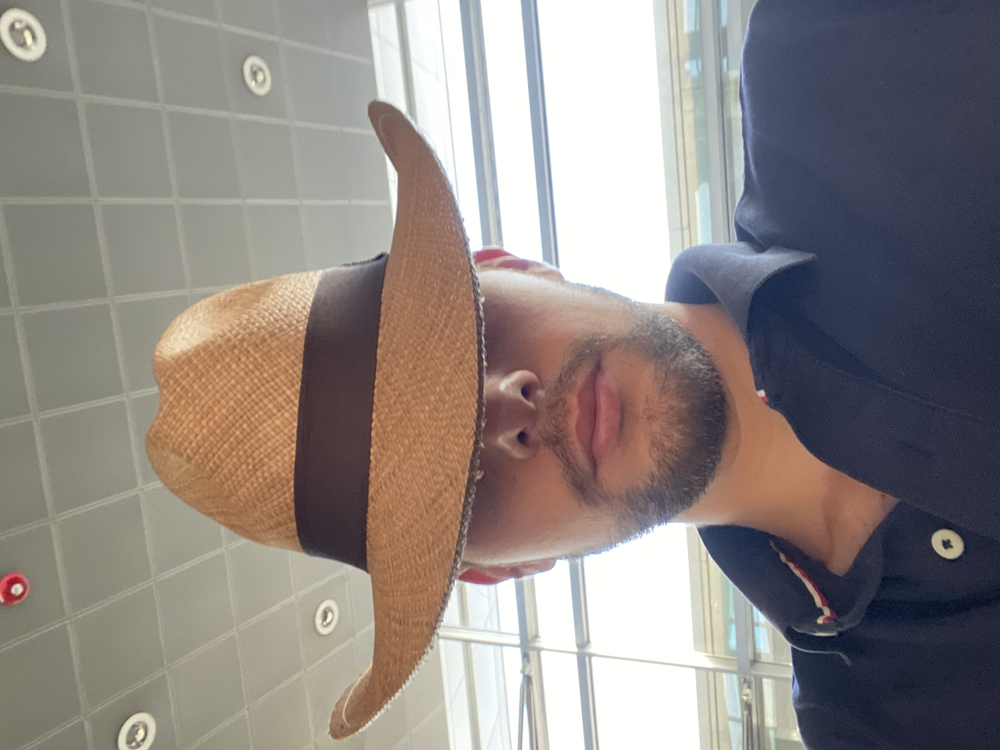

|
Marco Belli
I am currently doing my Master's in mathematics at ETH Zürich, where I also completed my Bachelor's. Here is my CV. I am interested in complex and algebraic geometry. At the moment I am studying the moduli spaces of curves and of abelian varieties.
|
 |
| Spring 2025: | Exam correction, Topology and Basic Structures, ETH Zürich. |
| Spring 2025: | Teaching assistant, Algebra II, ETH Zürich. |
| 2024-2025: | Private tutoring, various subjects, EduQuant platform. |
| Fall 2024: | Exam correction, Complex Analysis, ETH Zürich. |
| Spring 2024: | Teaching assistant, Analysis II, ETH Zürich. |
| Spring 2023: | Teaching assistant, Mathematics II, ETH Zürich. |
| Sep 11-19 2025: | Nairobi Workshop in Algebraic Geometry, University of Nairobi, Kenya. |
| Jun 9-13 2025: | Harmonies in Moduli Spaces, Università Roma Tre, Italy. |